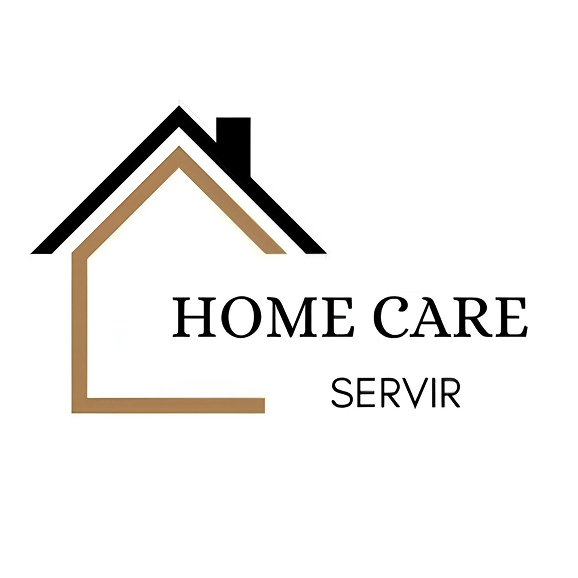
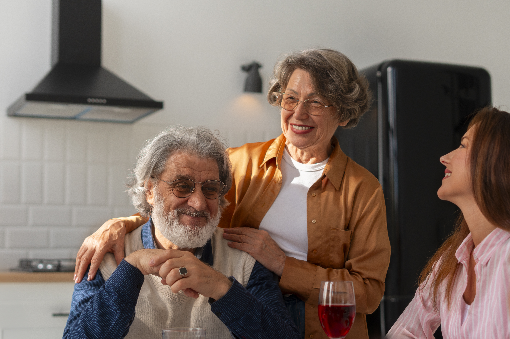

Conheça a história, os valores e as pessoas que fazem da Home Care Servir um espaço de acolhimento e confiança.

A Home Care Servir nasceu da vivência de profissionais da saúde que identificaram, na própria região, a necessidade de um cuidado mais humano e respeitoso dentro do lar.
Diante da falta de preparo de muitos profissionais e da sobrecarga das famílias, criamos um serviço personalizado, com empatia, excelência e dignidade. Hoje, reunimos uma equipe comprometida em servir com amor e transformar a vida de quem precisa de cuidado.


Tudo o que fazemos é movido por propósito, presença e compromisso com a vida.

Nossa missão é oferecer um atendimento diferenciado e humanizado, promovendo o cuidado com amor, respeito e excelência, com o compromisso de contribuir de forma significativa para a recuperação e o bem-estar dos nossos pacientes.
Ser referência em cuidado domiciliar humanizado em nossa região, sendo reconhecidos pela excelência no trabalho e pela qualidade no atendimento prestado aos pacientes.

Acreditamos no cuidado humanizado e na valorização dos nossos colaboradores, garantindo conforto e segurança às famílias. Nossos valores são: empatia, ética, comprometimento, respeito à dignidade humana e responsabilidade.